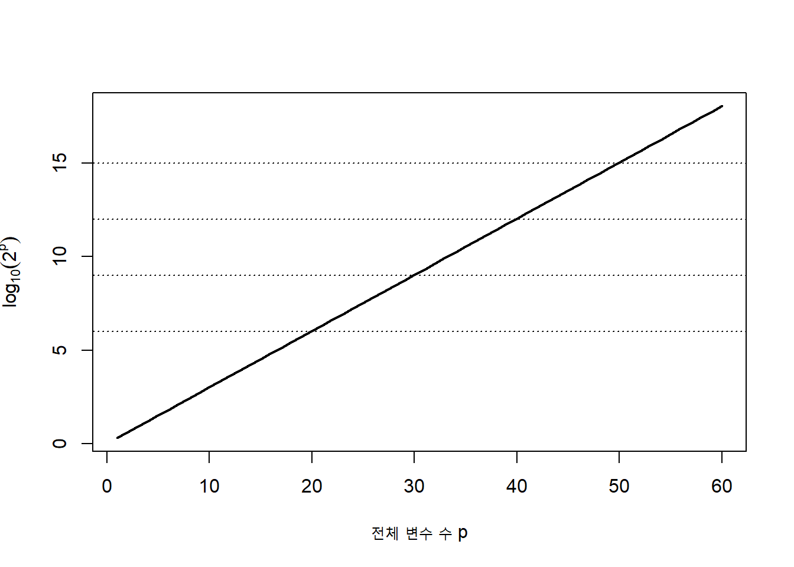
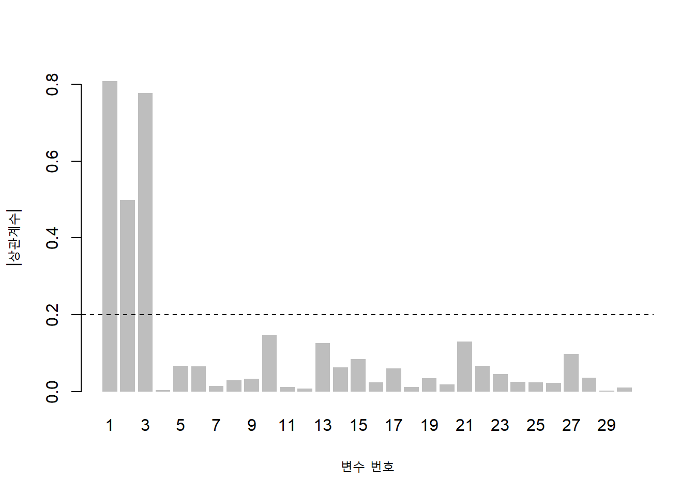
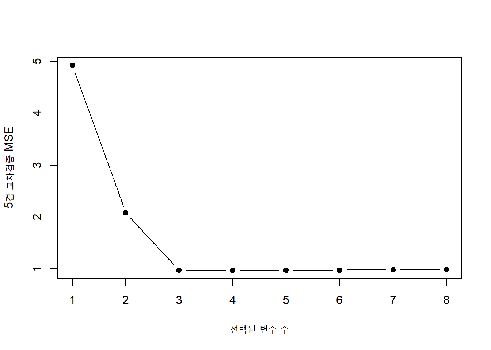
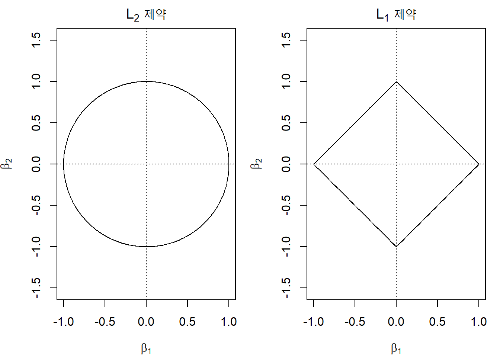
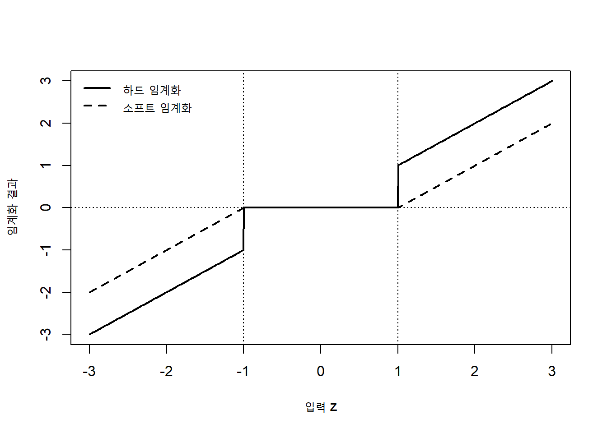
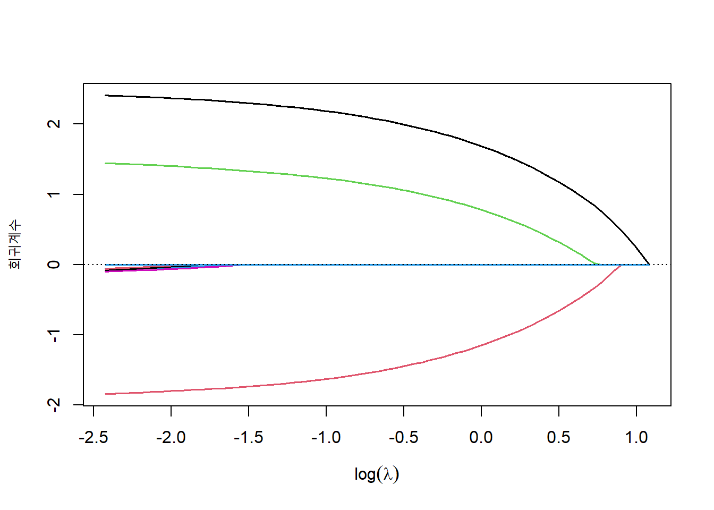
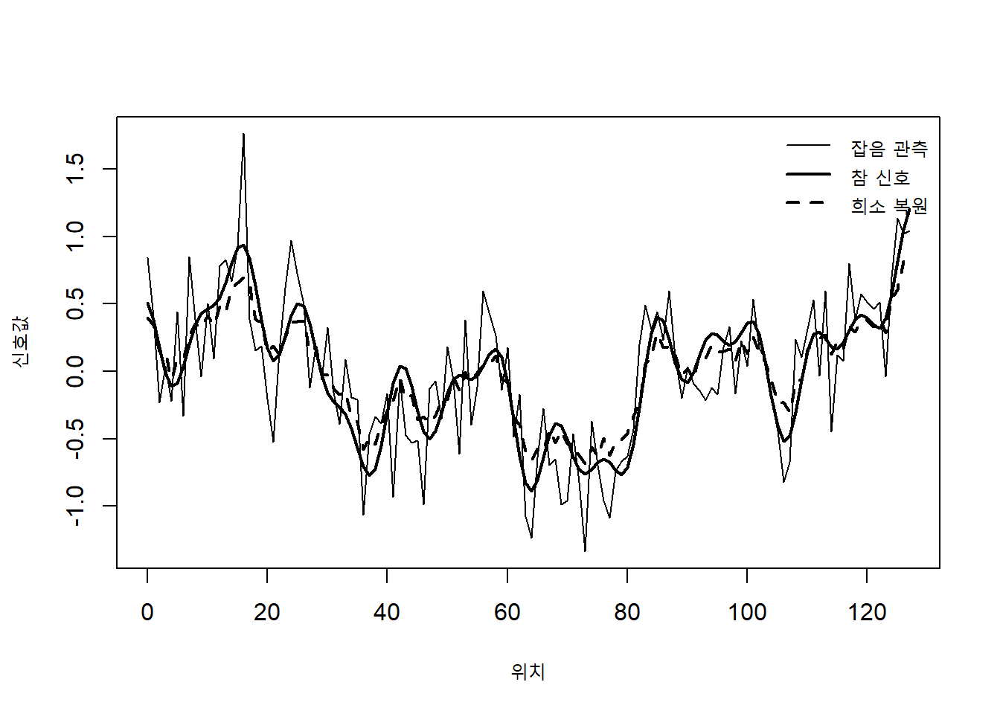
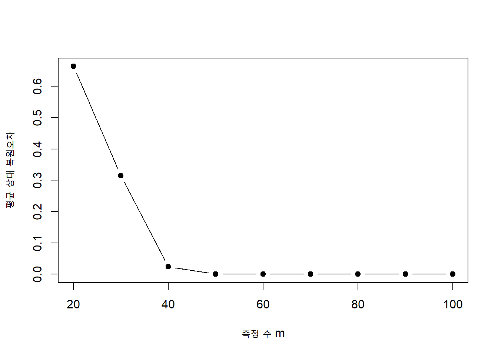

p <- 1:60
number_subsets <- 2^p
plot(
p,
log10(number_subsets),
type = "l",
lwd = 2,
xlab = "전체 변수 수 p",
ylab = expression(log[10](2^p))
)
abline(h = c(6, 9, 12, 15), lty = 3)
고차원 자료에서는 변수의 수가 많다는 사실 자체보다, 예측에 실제로 필요한 정보가 소수의 변수나 소수의 표현계수에 집중되어 있을 가능성이 중요하다. 유전체 자료, 영상자료, 텍스트 자료와 센서 자료에서는 변수의 수가 표본 수보다 훨씬 많을 수 있으며, 많은 변수는 서로 강하게 상관되거나 잡음만 포함할 수 있다. 이러한 상황에서 모든 변수를 그대로 사용하는 모형은 계산비용이 커질 뿐 아니라 과적합, 불안정한 추정, 해석의 어려움과 자료수집 비용 증가를 초래할 수 있다.
특성 선택(feature selection)은 원래 변수 가운데 분석에 필요한 일부를 선택하는 과정이다. 반면 희소 학습(sparse learning)은 모수나 표현계수 대부분을 정확히 0으로 만들거나 0에 가깝게 만들어 소수의 성분만 사용하도록 학습하는 접근이다. 두 방법은 목적과 구현이 다르지만, 불필요한 자유도를 줄이고 핵심 신호를 강조한다는 점에서 밀접하게 연결된다.
이 장에서는 부분집합 탐색과 평가에서 출발하여 필터 방식, 래퍼 방식, 내장형 선택과 \(\ell_1\) 규제를 살펴본다. 이어 자료를 소수의 기저벡터 조합으로 표현하는 희소 표현과 사전학습을 설명하고, 제한된 선형측정으로부터 희소 신호를 복원하는 압축 센싱으로 확장한다.
훈련자료를
\[ \mathcal D = \{(\mathbf x_i,y_i)\}_{i=1}^{n}, \qquad \mathbf x_i\in\mathbb R^p \tag{11.1}\]
라고 하자. 특성 선택은 전체 변수 인덱스 집합
\[ \mathcal P=\{1,2,\ldots,p\} \tag{11.2}\]
에서 부분집합 \(S\subseteq\mathcal P\)를 선택하고, 선택된 변수
\[ \mathbf x_{i,S}=(x_{ij}:j\in S) \tag{11.3}\]
만을 이용하여 예측함수를 학습하는 문제이다.
특성 선택과 차원 축소는 모두 입력 차원을 줄이지만 결과의 의미가 다르다. 특성 선택은 원변수 자체를 유지한다.
\[ \mathbf z = (x_{j_1},\ldots,x_{j_q})^{\top}. \tag{11.4}\]
차원 축소는 일반적으로 원변수의 선형 또는 비선형 결합을 생성한다.
\[ \mathbf z = \phi(\mathbf x), \qquad \mathbf z\in\mathbb R^q, \quad q<p. \tag{11.5}\]
| 구분 | 특성 선택 | 차원 축소 |
|---|---|---|
| 결과 | 원변수의 부분집합 | 새롭게 생성된 표현 |
| 해석 | 비교적 직접적 | 성분 해석이 어려울 수 있음 |
| 상관된 신호 | 일부 변수만 남길 수 있음 | 여러 변수의 정보를 결합 |
| 자료수집 비용 | 실제 측정변수 수를 줄일 수 있음 | 원변수 측정이 여전히 필요할 수 있음 |
| 대표 방법 | 필터, 래퍼, LASSO | PCA, 커널 PCA, 오토인코더 |
특성 선택의 목적은 단순히 예측성능을 최대화하는 데 한정되지 않는다. 분석 목적에 따라 다음 목표가 함께 고려될 수 있다.
이 목표들은 항상 일치하지 않는다. 예측성능이 거의 같은 두 모형 가운데 하나는 변수 수가 적어 해석이 쉽고, 다른 하나는 상관된 변수들을 모두 포함하여 재현성이 높을 수 있다. 따라서 특성 선택에서는 선택 기준뿐 아니라 선택 목적을 먼저 명확히 해야 한다.
모수벡터 \(\boldsymbol\beta=(\beta_1,\ldots,\beta_p)^{\top}\)에서 0이 아닌 계수의 인덱스 집합을 지지집합(support set)이라고 한다.
\[ \operatorname{supp}(\boldsymbol\beta) = \{j:\beta_j\neq 0\}. \tag{11.6}\]
지지집합의 크기는 \(\ell_0\) 준노름(\(\ell_0\) pseudo-norm)으로 나타낸다.
\[ \|\boldsymbol\beta\|_0 = \sum_{j=1}^{p}I(\beta_j\neq 0). \tag{11.7}\]
엄밀히 말하면 \(\|\cdot\|_0\)는 노름의 공리를 만족하지 않지만, 0이 아닌 원소의 수를 나타내는 관행적 표기이다. 특성 선택은 지지집합을 추정하는 문제로 표현할 수 있다.
\[ \widehat S = \operatorname{supp}(\widehat{\boldsymbol\beta}). \tag{11.8}\]
선형 회귀에서 변수 수를 최대 \(k\)개로 제한하는 최적부분집합 선택(best subset selection)은 다음과 같다.
\[ \widehat{\boldsymbol\beta} = \arg\min_{\boldsymbol\beta} \left\{ \frac{1}{2n} \|\mathbf y-\mathbf X\boldsymbol\beta\|_2^2 \right\} \quad \text{subject to} \quad \|\boldsymbol\beta\|_0\leq k. \tag{11.9}\]
동일한 문제를 패널티 형태로 나타내면
\[ \widehat{\boldsymbol\beta} = \arg\min_{\boldsymbol\beta} \left\{ \frac{1}{2n} \|\mathbf y-\mathbf X\boldsymbol\beta\|_2^2 + \lambda\|\boldsymbol\beta\|_0 \right\} \tag{11.10}\]
가 된다. \(\lambda\)가 클수록 더 적은 변수를 선택한다.
희소성 가정은 전체 \(p\)개 변수 중 실제 신호에 기여하는 변수가 소수라는 가정이다. 참 모수벡터를 \(\boldsymbol\beta^{\ast}\)라고 할 때
\[ s = \|\boldsymbol\beta^{\ast}\|_0 \ll p \tag{11.11}\]
로 표현한다. 특히 \(p\gg n\)인 고차원 상황에서는 아무런 구조적 가정 없이 \(p\)개의 효과를 모두 안정적으로 추정하기 어렵다. 희소성은 고차원 문제를 학습 가능하게 만드는 대표적 구조 가정이다.
그러나 실제 자료의 신호가 반드시 정확히 희소한 것은 아니다. 작은 효과가 많은 경우에는 근사 희소성(approximate sparsity)을 고려할 수 있다. 계수의 절댓값을 큰 순서대로 정렬하여
\[ |\beta^{\ast}|_{(1)} \geq |\beta^{\ast}|_{(2)} \geq\cdots\geq |\beta^{\ast}|_{(p)} \]
라고 할 때, 계수가 빠르게 감소한다면 소수의 큰 효과만으로 전체 신호를 근사할 수 있다.
같은 신호도 어떤 기저나 변수표현을 사용하는지에 따라 희소할 수도 있고 그렇지 않을 수도 있다. 시간영역에서는 조밀한 신호가 주파수영역에서는 소수의 성분만 가질 수 있다. 따라서 희소 학습의 성공은 적절한 표현공간의 선택과 밀접하다.
특성 선택은 크게 두 가지 목적을 가질 수 있다.
예측을 목적으로 할 때는 상관된 변수 중 하나만 선택해도 충분할 수 있다. 그러나 과학적 발견이나 기전 해석에서는 상관된 후보군 전체가 중요할 수 있다. 또한 예측에 유용한 변수가 반드시 인과적 변수인 것은 아니다.
예측위험을 최소화하는 부분집합을
\[ S_{\mathrm{pred}} = \arg\min_{S\subseteq\mathcal P} R(S) \tag{11.12}\]
라고 하고, 참 자료생성 과정에 직접 포함된 변수집합을 \(S^{\ast}\)라고 하자. 일반적으로
\[ S_{\mathrm{pred}} \neq S^{\ast} \tag{11.13}\]
일 수 있다. 대리변수, 측정오차, 상관구조와 표본변동 때문에 예측에 가장 좋은 변수집합과 과학적으로 관심 있는 변수집합이 다를 수 있기 때문이다.
\(p\)개 변수의 가능한 부분집합 수는
\[ \sum_{k=0}^{p}\binom{p}{k} = 2^p \tag{11.14}\]
이다. \(p=20\)이면 약 백만 개의 부분집합이 존재하고, \(p=50\)이면 그 수는 약 \(1.13\times10^{15}\)개에 이른다. 따라서 모든 부분집합을 평가하는 전수탐색은 변수 수가 조금만 증가해도 현실적으로 불가능하다.
p <- 1:60
number_subsets <- 2^p
plot(
p,
log10(number_subsets),
type = "l",
lwd = 2,
xlab = "전체 변수 수 p",
ylab = expression(log[10](2^p))
)
abline(h = c(6, 9, 12, 15), lty = 3)
전수탐색이 가능한 작은 문제에서는 각 부분집합 크기 \(k\)에 대해 잔차제곱합이 가장 작은 모형을 찾은 뒤, 교차검증이나 정보기준으로 최종 \(k\)를 선택할 수 있다. 그러나 훈련오차는 변수를 추가할수록 감소하므로 훈련오차만으로 부분집합 크기를 결정할 수 없다.
전진 선택(forward selection)은 빈 모형에서 시작하여 매 단계에서 성능을 가장 많이 개선하는 변수 하나를 추가한다.
초기 집합을
\[ S_0=\varnothing \]
으로 두고, \(t\)번째 단계에서
\[ j_t = \arg\min_{j\notin S_{t-1}} \widehat R(S_{t-1}\cup\{j\}) \tag{11.15}\]
를 선택한 뒤
\[ S_t=S_{t-1}\cup\{j_t\} \tag{11.16}\]
로 갱신한다.
전진 선택은 계산이 빠르고 \(p>n\)에서도 사용할 수 있지만, 한번 제외된 변수는 이후 다시 고려되지 않는다. 상호작용이 강하거나 단독효과는 약하지만 함께 포함될 때 유용한 변수들은 선택되지 않을 수 있다.
후진 제거(backward elimination)는 모든 변수를 포함한 모형에서 시작하여 성능 손실이 가장 작은 변수를 하나씩 제거한다.
\[ j_t = \arg\min_{j\in S_{t-1}} \widehat R(S_{t-1}\setminus\{j\}). \tag{11.17}\]
후진 제거는 초기 전체모형을 적합할 수 있어야 하므로 일반적으로 \(p<n\)이 필요하다. 단계적 선택(stepwise selection)은 전진 단계와 후진 단계를 번갈아 수행하여 이미 선택된 변수도 다시 제거할 수 있도록 한다.
순차 부동 선택(sequential floating selection)은 고정된 전진·후진 횟수를 두지 않고, 추가와 제거를 반복하여 탐색경로의 경직성을 완화한다. 그러나 이러한 탐욕적 방법은 전역 최적부분집합을 보장하지 않는다.
분기한정법(branch and bound)은 탐색공간을 여러 부분으로 나눈 뒤, 각 부분에서 얻을 수 있는 최선의 목적함수 하한을 계산하여 최적해가 존재할 수 없는 영역을 제거한다. 설계행렬의 구조와 목적함수의 단조성을 이용하면 전수탐색보다 훨씬 적은 부분집합만 평가할 수 있다.
현대의 최적부분집합 선택은 이진변수 \(z_j\in\{0,1\}\)를 도입한 혼합정수 최적화(mixed-integer optimization)로 표현할 수 있다.
\[ \min_{\boldsymbol\beta,\mathbf z} \frac{1}{2n} \|\mathbf y-\mathbf X\boldsymbol\beta\|_2^2 \]
subject to
\[ -Mz_j\leq\beta_j\leq Mz_j, \qquad j=1,\ldots,p, \]
\[ \sum_{j=1}^{p}z_j\leq k, \qquad z_j\in\{0,1\}. \tag{11.18}\]
여기서 \(M\)은 충분히 큰 상수이다. \(z_j=0\)이면 \(\beta_j=0\)이 되어 변수가 제외된다. 혼합정수 최적화는 전역해 또는 전역해와의 오차한계를 제공할 수 있지만, 대규모 문제에서는 계산비용이 매우 클 수 있다.
부분집합을 평가하는 기준은 분석 목적에 따라 달라진다. 회귀모형에서 흔히 사용하는 기준은 다음과 같다.
\(K\)겹 교차검증 오차는
\[ \operatorname{CV}(S) = \frac{1}{K} \sum_{k=1}^{K} \frac{1}{|\mathcal I_k|} \sum_{i\in\mathcal I_k} L\{y_i,\widehat f_S^{(-k)}(\mathbf x_i)\} \tag{11.19}\]
이다. 여기서 \(\widehat f_S^{(-k)}\)는 \(k\)번째 검증폴드를 제외한 자료로 적합한 모형이다.
선형 회귀에서 후보모형의 잔차제곱합을 \(\operatorname{RSS}_S\)라고 하면
\[ C_p(S) = \frac{\operatorname{RSS}_S}{\widehat\sigma^2} -n+2|S| \tag{11.20}\]
로 정의할 수 있다. 적절한 모형에서는 \(C_p\)가 대략 모수 수와 비슷할 것으로 기대된다.
로그우도를 \(\ell_S\)라고 할 때
\[ \operatorname{AIC}(S) = -2\ell_S+2d_S, \tag{11.21}\]
\[ \operatorname{BIC}(S) = -2\ell_S+d_S\log n, \tag{11.22}\]
이다. \(d_S\)는 모형의 유효 모수 수이다. BIC는 표본이 커질수록 복잡도에 더 강한 패널티를 부여한다.
| 평가목적 | 대표 기준 | 특징 |
|---|---|---|
| 예측성능 | 교차검증, 독립 검증자료 | 직접적인 일반화 성능 평가 |
| 간결성 포함 예측 | 1-표준오차 규칙 | 최저오차와 비슷한 더 단순한 모형 선택 |
| likelihood 기반 비교 | AIC | 예측 효율을 강조 |
| 참모형 선택 관점 | BIC | 더 강한 복잡도 패널티 |
| 선형 회귀 | \(C_p\), 조정 \(R^2\) | 잔차변동과 모형크기 반영 |
동일한 자료를 사용하여 변수집합을 선택하고 성능까지 평가하면 성능이 낙관적으로 추정된다. 변수선택 자체가 자료에 적합된 학습과정이기 때문이다.
올바른 외부평가는 다음 구조를 가진다.
하이퍼파라미터와 변수 수까지 선택한다면 중첩 교차검증이 필요하다. 외부 폴드는 전체 선택절차의 일반화 성능을 평가하고, 내부 폴드는 변수 수나 규제 모수를 선택한다.
\[ \text{외부 훈련자료} \rightarrow \left[ \text{내부 변수선택과 튜닝} \right] \rightarrow \text{외부 검증자료 평가} \tag{11.23}\]
필터 방식처럼 단순한 변수순위도 전체 자료에서 계산하면 시험자료 정보가 유입된다. 각 교차검증 폴드의 훈련부분에서 점수 계산, 변수선택, 표준화와 모형적합을 모두 다시 수행해야 한다.
표본이 조금만 달라져도 선택되는 변수가 크게 변할 수 있다. 재표본화 반복 \(b=1,\ldots,B\)에서 선택된 변수집합을 \(\widehat S^{(b)}\)라고 하면 변수 \(j\)의 선택빈도는
\[ \widehat\pi_j = \frac{1}{B} \sum_{b=1}^{B} I\{j\in\widehat S^{(b)}\} \tag{11.24}\]
로 정의한다. 선택빈도가 높은 변수는 표본변동에 더 안정적이라고 볼 수 있다.
두 선택집합 \(S_a\)와 \(S_b\)의 유사성은 Jaccard 지수로 평가할 수 있다.
\[ J(S_a,S_b) = \frac{|S_a\cap S_b|}{|S_a\cup S_b|}. \tag{11.25}\]
예측성능이 높더라도 선택안정성이 매우 낮다면 개별 변수의 과학적 해석에는 주의해야 한다.
필터 방식(filter method)은 특정 예측알고리즘을 적합하기 전에 각 변수 또는 변수집합의 통계적 특성을 이용하여 변수를 선택한다. 일반적 구조는 다음과 같다.
\[ \mathbf X \xrightarrow{\text{점수 계산}} (s_1,\ldots,s_p) \xrightarrow{\text{순위 또는 임계값}} \widehat S \xrightarrow{\text{예측모형}} \widehat f. \tag{11.26}\]
필터 방식은 계산이 빠르고 모형에 독립적이며 \(p\gg n\)인 자료에서도 쉽게 적용할 수 있다. 그러나 변수 간 상호작용과 후속 예측모형의 구조를 충분히 반영하지 못할 수 있다.
가장 단순한 비지도 필터는 분산이 거의 없는 변수를 제거하는 것이다.
\[ s_j^2 = \frac{1}{n-1} \sum_{i=1}^{n}(x_{ij}-\bar x_j)^2. \tag{11.27}\]
분산이 0인 변수는 모든 관측값에서 같은 값을 가지므로 대부분의 학습 알고리즘에 정보를 제공하지 않는다. 그러나 분산이 작다는 사실이 반응과의 관련성이 작음을 의미하지는 않는다. 측정단위가 다른 변수에서는 표준화 전 분산을 직접 비교해서도 안 된다.
연속형 반응에서는 피어슨 상관계수
\[ r_j = \frac{ \sum_{i=1}^{n}(x_{ij}-\bar x_j)(y_i-\bar y) }{ \sqrt{\sum_{i=1}^{n}(x_{ij}-\bar x_j)^2} \sqrt{\sum_{i=1}^{n}(y_i-\bar y)^2} } \tag{11.28}\]
의 절댓값을 변수점수로 사용할 수 있다. 비선형 단조관계에는 스피어만 순위상관이 더 적합할 수 있다.
이진 분류에서는 두 집단 평균 차이에 대한 \(t\) 통계량을 사용할 수 있다.
\[ t_j = \frac{\bar x_{j1}-\bar x_{j0}} { \sqrt{s_{j1}^2/n_1+s_{j0}^2/n_0} }. \tag{11.29}\]
범주형 변수와 클래스의 관련성은 카이제곱 통계량으로 평가할 수 있다.
\[ \chi_j^2 = \sum_{a}\sum_{g} \frac{(O_{ag}-E_{ag})^2}{E_{ag}}. \tag{11.30}\]
이러한 단변량 점수는 해석이 쉽고 계산이 매우 빠르지만, 개별효과가 약하고 상호작용을 통해서만 중요한 변수는 놓칠 수 있다.
수천 개 변수에 대해 개별 가설검정을 수행하면 우연히 작은 \(p\)값을 갖는 변수가 많이 나타난다. 변수 \(j\)에 대한 귀무가설을
\[ H_{0j}: X_j\text{와 }Y\text{는 관련이 없다} \]
라고 하자. 단순히 \(p_j<0.05\)를 적용하면 변수 수가 많을 때 거짓양성이 크게 증가한다.
Benjamini–Hochberg 절차는 정렬된 \(p\)값
\[ p_{(1)}\leq p_{(2)}\leq\cdots\leq p_{(p)} \]
에 대해
\[ k^{\ast} = \max\left\{ k: p_{(k)}\leq\frac{k}{p}q \right\} \tag{11.31}\]
를 찾고 \(p_{(1)},\ldots,p_{(k^{\ast})}\)에 해당하는 변수를 선택한다. 여기서 \(q\)는 목표 거짓발견률이다.
다중검정 조정은 과학적 발견을 위한 후보변수 선별에 유용하지만, 예측성능을 직접 최적화하는 기준은 아니다.
상호정보량(mutual information)은 한 변수를 관찰했을 때 다른 변수의 불확실성이 얼마나 감소하는지를 측정한다. 이산형 변수 \(X\)와 \(Y\)에 대해
\[ I(X;Y) = \sum_x\sum_y p(x,y) \log \frac{p(x,y)}{p(x)p(y)}. \tag{11.32}\]
엔트로피를 사용하면
\[ I(X;Y) = H(Y)-H(Y\mid X) \tag{11.33}\]
로 쓸 수 있다. \(X\)와 \(Y\)가 독립이면 상호정보량은 0이고, 관계가 강할수록 값이 커진다. 상관계수와 달리 비선형 관계도 탐지할 수 있지만, 연속형 자료에서는 밀도 또는 이웃 기반 추정이 필요하고 표본이 작으면 편향이 클 수 있다.
개별적으로 반응과 관련성이 높은 변수들이 서로 거의 같은 정보를 담고 있다면 모두 선택할 필요가 없을 수 있다. 최대 관련성 최소 중복성(maximum relevance minimum redundancy, mRMR)은 반응과의 관련성을 높이면서 선택변수 간 중복을 줄인다.
선택집합 \(S\)의 평균 관련성을
\[ D(S) = \frac{1}{|S|} \sum_{j\in S}I(X_j;Y) \tag{11.34}\]
로, 평균 중복성을
\[ R(S) = \frac{1}{|S|^2} \sum_{j,k\in S}I(X_j;X_k) \tag{11.35}\]
로 정의하면 대표적 목적은
\[ \max_S\{D(S)-R(S)\} \tag{11.36}\]
이다. 실제로는 변수를 하나씩 추가하는 탐욕적 알고리즘을 사용한다.
Relief는 각 관측값의 가까운 동일클래스 이웃과 다른클래스 이웃을 비교하여 변수를 평가한다. 변수 \(j\)가 좋은 변수라면 같은 클래스의 가까운 관측값에서는 값이 비슷하고, 다른 클래스의 가까운 관측값에서는 값이 달라야 한다.
단순화한 갱신은 다음과 같이 나타낼 수 있다.
\[ w_j \leftarrow w_j - \frac{1}{m}\operatorname{diff}_j(\mathbf x_i,\mathbf x_{\text{hit}}) + \frac{1}{m}\operatorname{diff}_j(\mathbf x_i,\mathbf x_{\text{miss}}). \tag{11.37}\]
ReliefF는 여러 이웃과 다중 클래스를 사용하도록 확장한다. 단변량 검정과 달리 국소적 상호작용을 일부 반영할 수 있지만, 거리척도와 이웃 수에 민감하다.
레이블이 없는 자료에서는 국소 이웃구조를 잘 보존하는 변수를 선택할 수 있다. 유사도행렬을 \(W=(w_{ik})\)라고 하고 그래프 차수행렬과 라플라시안을
\[ \mathbf D=\operatorname{diag}(d_1,\ldots,d_n), \qquad d_i=\sum_k w_{ik}, \]
\[ \mathbf L=\mathbf D-\mathbf W \tag{11.38}\]
로 정의하자. 중심화된 변수벡터를 \(\widetilde{\mathbf x}_j\)라고 하면 라플라시안 점수(Laplacian score)는
\[ \operatorname{LS}(j) = \frac{ \widetilde{\mathbf x}_j^{\top} \mathbf L \widetilde{\mathbf x}_j }{ \widetilde{\mathbf x}_j^{\top} \mathbf D \widetilde{\mathbf x}_j } \tag{11.39}\]
로 정의할 수 있다. 점수가 작을수록 그래프에서 가까운 관측값들이 해당 변수에서도 비슷한 값을 가지므로 국소구조를 잘 보존한다.
다음 시뮬레이션은 실제 신호변수, 중복변수와 잡음변수가 함께 있을 때 상관점수가 어떻게 나타나는지를 보여준다.
set.seed(1111)
n <- 180
p <- 30
x1 <- rnorm(n)
x2 <- rnorm(n)
x3 <- 0.9 * x1 + rnorm(n, sd = 0.3)
noise <- matrix(rnorm(n * (p - 3)), nrow = n)
X <- cbind(x1, x2, x3, noise)
y <- 2.0 * x1 - 1.5 * x2 + rnorm(n)
score <- drop(abs(cor(X, y)))
barplot(
score,
names.arg = seq_along(score),
xlab = "변수 번호",
ylab = "|상관계수|",
border = NA
)
abline(h = 0.2, lty = 2)
\(x_1\)과 \(x_2\)는 실제 신호변수이고 \(x_3\)은 \(x_1\)의 중복정보를 담는다. 단변량 필터는 \(x_1\)과 \(x_3\)을 모두 높은 순위로 평가할 수 있다. 중복 제거가 중요한 경우 상관구조를 추가로 고려해야 한다.
| 장점 | 한계 |
|---|---|
| 매우 빠르고 대규모 변수에 적용 가능 | 후속 학습알고리즘과 분리됨 |
| 모형에 독립적 | 상호작용을 놓칠 수 있음 |
| 변수별 점수 해석이 쉬움 | 상관된 변수의 중복선택 가능 |
| 초기 차원 축소에 유용 | 임계값과 선택 수가 임의적일 수 있음 |
| \(p\gg n\)에서 적용 가능 | 표본이 작으면 점수 불안정 |
필터 방식은 수만 개 변수를 수백 개 수준으로 줄이는 1차 선별에 특히 유용하다. 이후 래퍼 방식이나 규제 모형을 적용하는 다단계 전략도 자주 사용된다.
래퍼 방식(wrapper method)은 특정 학습알고리즘의 검증성능을 직접 이용하여 변수부분집합을 평가한다.
\[ S \xrightarrow{\text{모형 적합}} \widehat f_S \xrightarrow{\text{재표본화 평가}} \widehat R_{\mathrm{val}}(S). \tag{11.40}\]
최종 선택은
\[ \widehat S = \arg\min_{S\in\mathcal C} \widehat R_{\mathrm{val}}(S) \tag{11.41}\]
로 표현할 수 있다. 여기서 \(\mathcal C\)는 탐색알고리즘이 고려한 후보 부분집합의 집합이다.
래퍼 방식은 학습알고리즘의 비선형성, 상호작용과 성능척도를 직접 반영할 수 있다. 반면 각 후보집합마다 모형을 반복 적합하므로 계산비용이 매우 크고, 검증자료에 대한 과적합이 발생할 수 있다.
순차 전진 선택은 매 단계에서 검증성능을 가장 많이 개선하는 변수를 추가한다.
\[ j_t = \arg\min_{j\notin S_{t-1}} \operatorname{CV} (S_{t-1}\cup\{j\};\mathcal A), \tag{11.42}\]
여기서 \(\mathcal A\)는 지정된 학습알고리즘이다. 선형 회귀를 사용하면 고전적 전진 선택과 비슷하지만, 랜덤 포레스트, SVM 또는 kNN을 사용하면 해당 알고리즘의 검증성능에 맞춘 변수집합을 선택한다.
순차 후진 제거는 전체 변수집합에서 시작한다. 변수 수가 매우 많거나 전체모형을 적합하기 어려운 경우에는 먼저 필터 방식으로 후보 수를 줄이는 것이 필요하다.
재귀적 특성 제거(recursive feature elimination, RFE)는 현재 변수집합으로 모형을 적합한 뒤 중요도가 가장 낮은 변수를 제거하는 과정을 반복한다.
선형 SVM에서는 \(|\widehat\beta_j|\) 또는 \(\widehat\beta_j^2\)을 중요도로 사용할 수 있다. 트리 기반 모형에서는 분할이득이나 순열 중요도를 사용할 수 있다. 그러나 편향된 중요도 척도를 사용하면 RFE의 선택도 편향될 수 있다.
변수부분집합을 이진벡터
\[ \mathbf z=(z_1,\ldots,z_p), \qquad z_j\in\{0,1\} \tag{11.43}\]
로 표현할 수 있다. 유전 알고리즘은 여러 후보 벡터를 개체군으로 유지하면서 선택, 교차와 돌연변이를 통해 새로운 부분집합을 생성한다. 적합도 함수는 예를 들어
\[ F(\mathbf z) = -\operatorname{CV}(\mathbf z) - \gamma\sum_{j=1}^{p}z_j \tag{11.44}\]
처럼 검증오차와 변수 수를 함께 반영할 수 있다.
확률적 탐색은 탐욕적 방법이 놓치는 변수조합을 발견할 가능성이 있지만, 결과가 난수시드에 따라 달라질 수 있고 계산량이 크다. 여러 번 반복하여 선택빈도와 목적함수 분포를 확인해야 한다.
Boruta 방식은 원변수를 무작위로 섞어 만든 그림자 변수(shadow feature)를 추가하고, 랜덤 포레스트 중요도를 비교한다. 원변수의 중요도가 가장 중요한 그림자 변수보다 지속적으로 높다면 해당 변수를 중요한 변수로 판단한다.
이 접근은 최소한의 예측부분집합보다 반응과 관련된 모든 변수를 찾는 데 초점을 둔다. 상관된 변수들도 함께 선택될 수 있으며, 랜덤 포레스트 중요도와 반복 횟수에 영향을 받는다.
후보부분집합을 많이 탐색할수록 우연히 검증자료에서 좋은 성능을 보이는 부분집합이 나타날 가능성이 커진다. 후보 수를 \(M\)이라고 할 때
\[ \min_{m=1,\ldots,M} \widehat R_{\mathrm{val}}(S_m) \]
은 각 후보의 참위험보다 낙관적일 수 있다. 따라서 탐색과 성능평가를 분리하는 중첩 재표본화가 필수적이다.
래퍼 방식의 내부 교차검증은 변수집합을 선택하고, 외부 교차검증은 선택절차 전체를 평가한다. 최종 시험자료는 전체 분석설계를 확정한 뒤 한 번만 사용해야 한다.
변수마다 측정비용 \(c_j\)가 다르면 예측오차뿐 아니라 총 측정비용도 고려할 수 있다.
\[ \widehat S = \arg\min_S \left\{ \widehat R_{\mathrm{val}}(S) + \gamma\sum_{j\in S}c_j \right\}. \tag{11.45}\]
비용에는 금전적 비용, 검사시간, 환자 부담, 저장공간과 계산시간이 포함될 수 있다. 응용환경에 따라 비용제약을
\[ \sum_{j\in S}c_j\leq C \tag{11.46}\]
로 직접 설정할 수도 있다.
다음 코드는 선형 회귀와 5겹 교차검증을 이용한 단순 전진 래퍼 선택을 구현한다. 실제 분석에서는 교차검증 분할을 반복하고, 선택절차 전체를 외부 재표본화 안에서 수행해야 한다.
set.seed(1121)
n <- 160
p <- 12
X <- matrix(rnorm(n * p), nrow = n)
y <- 2.2 * X[, 1] - 1.8 * X[, 4] + 1.2 * X[, 7] + rnorm(n)
fold_id <- sample(rep(1:5, length.out = n))
selected <- integer(0)
remaining <- 1:p
cv_path <- numeric(0)
cv_mse <- function(cols) {
err <- numeric(5)
for (k in 1:5) {
train <- fold_id != k
valid <- !train
fit <- lm(y[train] ~ X[train, cols, drop = FALSE])
pred <- cbind(1, X[valid, cols, drop = FALSE]) %*% coef(fit)
err[k] <- mean((y[valid] - pred)^2)
}
mean(err)
}
for (step in 1:8) {
candidate_error <- sapply(
remaining,
function(j) cv_mse(c(selected, j))
)
best <- remaining[which.min(candidate_error)]
selected <- c(selected, best)
remaining <- setdiff(remaining, best)
cv_path[step] <- min(candidate_error)
}
plot(
1:length(cv_path),
cv_path,
type = "b",
pch = 19,
xlab = "선택된 변수 수",
ylab = "5겹 교차검증 MSE"
)
내장형 방법(embedded method)은 모형적합과 변수선택을 하나의 최적화 문제 안에서 동시에 수행한다. 별도의 후보부분집합을 반복 평가하지 않고, 목적함수나 모형구조가 자연스럽게 변수선택을 유도한다.
대표적인 예는 다음과 같다.
내장형 방법은 래퍼 방식보다 계산이 효율적이고, 필터 방식보다 예측모형의 구조를 직접 반영한다.
릿지 회귀의 기본 추정과 예측 관점은 섹션 3.2.9에서 다루었다. 이 절에서는 변수선택과 희소성에 초점을 둔다.
중심화된 선형 회귀모형에서 릿지 회귀는
\[ \widehat{\boldsymbol\beta}^{\mathrm{ridge}} = \arg\min_{\boldsymbol\beta} \left\{ \frac{1}{2n} \|\mathbf y-\mathbf X\boldsymbol\beta\|_2^2 + \lambda\|\boldsymbol\beta\|_2^2 \right\} \tag{11.47}\]
로 정의된다. 릿지는 계수를 0에 가깝게 축소하지만 일반적으로 정확히 0으로 만들지 않는다.
LASSO(least absolute shrinkage and selection operator)는 \(\ell_1\) 패널티를 사용한다.
\[ \widehat{\boldsymbol\beta}^{\mathrm{lasso}} = \arg\min_{\boldsymbol\beta} \left\{ \frac{1}{2n} \|\mathbf y-\mathbf X\boldsymbol\beta\|_2^2 + \lambda\|\boldsymbol\beta\|_1 \right\}, \tag{11.48}\]
여기서
\[ \|\boldsymbol\beta\|_1 = \sum_{j=1}^{p}|\beta_j|. \tag{11.49}\]
LASSO는 일부 계수를 정확히 0으로 만들어 변수선택과 추정을 동시에 수행한다.
LASSO는 다음 제약문제와 동등하다.
\[ \min_{\boldsymbol\beta} \frac{1}{2n} \|\mathbf y-\mathbf X\boldsymbol\beta\|_2^2 \quad \text{subject to} \quad \|\boldsymbol\beta\|_1\leq t. \tag{11.50}\]
두 변수의 경우 \(\ell_1\) 제약영역은 꼭짓점이 축 위에 있는 마름모 모양이다. 잔차제곱합의 등고선이 제약영역과 처음 만나는 지점이 꼭짓점일 가능성이 높으므로 하나 이상의 계수가 0이 된다. 반면 \(\ell_2\) 제약영역은 매끄러운 원이므로 해가 축 위에 정확히 놓일 가능성이 낮다.
par(mfrow = c(1, 2), mar = c(4, 4, 2, 1))
theta <- seq(0, 2 * pi, length.out = 500)
plot(
cos(theta), sin(theta),
type = "l", asp = 1,
xlab = expression(beta[1]),
ylab = expression(beta[2]),
main = expression(L[2] * " 제약")
)
abline(h = 0, v = 0, lty = 3)
b1 <- seq(-1, 1, length.out = 300)
b2_upper <- 1 - abs(b1)
plot(
c(b1, rev(b1)),
c(b2_upper, -rev(b2_upper)),
type = "l", asp = 1,
xlab = expression(beta[1]),
ylab = expression(beta[2]),
main = expression(L[1] * " 제약")
)
abline(h = 0, v = 0, lty = 3)
par(mfrow = c(1, 1))
설계행렬의 열이 표준화되어
\[ \frac{1}{n}\mathbf X^{\top}\mathbf X=\mathbf I \tag{11.51}\]
를 만족한다고 하자. 최소제곱 추정량을
\[ z_j = \frac{1}{n}\mathbf x_j^{\top}\mathbf y \]
라고 하면 LASSO 해는 소프트 임계화(soft thresholding) 연산자로 주어진다.
\[ \widehat\beta_j = S(z_j,\lambda), \]
\[ S(z,\lambda) = \operatorname{sign}(z) (|z|-\lambda)_+. \tag{11.52}\]
\(|z_j|\leq\lambda\)이면 계수는 0이 되고, 그보다 크면 절댓값이 \(\lambda\)만큼 감소한다. \(\ell_0\) 패널티와 관련된 하드 임계화는 작은 계수를 0으로 만들지만 큰 계수는 축소하지 않는다.
z <- seq(-3, 3, length.out = 600)
lambda <- 1
hard <- z * (abs(z) > lambda)
soft <- sign(z) * pmax(abs(z) - lambda, 0)
plot(
z, hard,
type = "l",
lwd = 2,
xlab = "입력 z",
ylab = "임계화 결과",
ylim = c(-3, 3)
)
lines(z, soft, lty = 2, lwd = 2)
abline(h = 0, v = c(-lambda, lambda), lty = 3)
legend(
"topleft",
legend = c("하드 임계화", "소프트 임계화"),
lty = c(1, 2),
lwd = 2,
bty = "n"
)
일반 설계행렬에서는 LASSO 해가 닫힌형태로 주어지지 않는다. 좌표하강법(coordinate descent)은 다른 계수를 고정한 채 하나의 계수만 반복적으로 갱신한다.
변수 \(j\)를 제외한 부분잔차를
\[ \mathbf r_j = \mathbf y- \sum_{k\neq j}\mathbf x_k\beta_k \tag{11.53}\]
라고 하면 표준화된 변수에 대한 갱신은
\[ \beta_j \leftarrow \frac{ S\left( rac{1}{n}\mathbf x_j^{\top}\mathbf r_j,\lambda\right) }{ \frac{1}{n}\mathbf x_j^{\top}\mathbf x_j } \tag{11.54}\]
이다. 모든 좌표를 순환하며 목적함수 변화가 충분히 작아질 때까지 반복한다.
웜스타트(warm start)는 큰 \(\lambda\)의 해를 다음으로 작은 \(\lambda\)의 초기값으로 사용하여 전체 규제 경로를 효율적으로 계산한다.
LASSO 목적함수의 최적해는 Karush–Kuhn–Tucker 조건을 만족한다. 잔차를
\[ \widehat{\mathbf r} = \mathbf y-\mathbf X\widehat{\boldsymbol\beta} \]
라고 하면
\[ \frac{1}{n}\mathbf x_j^{\top}\widehat{\mathbf r} = \lambda\operatorname{sign}(\widehat\beta_j), \qquad \widehat\beta_j\neq0, \tag{11.55}\]
\[ \left| \frac{1}{n}\mathbf x_j^{\top}\widehat{\mathbf r} \right| \leq\lambda, \qquad \widehat\beta_j=0. \tag{11.56}\]
비활성 변수의 잔차상관이 \(\lambda\) 이하이면 해당 계수는 0으로 유지된다. 이 조건은 스크리닝 규칙과 최적성 검증에 사용된다.
\(\lambda\)가 매우 크면 모든 계수가 0이 된다. \(\lambda\)가 감소하면 변수들이 차례로 모형에 진입하고 계수의 절댓값이 증가한다. 선형 회귀에서 모든 계수가 0이 되는 최소 상한은
\[ \lambda_{\max} = \max_j \left| \frac{1}{n}\mathbf x_j^{\top}\mathbf y \right| \tag{11.57}\]
이다.
다음 코드는 base R로 간단한 LASSO 좌표하강법을 구현하여 규제 경로(regularization path)를 그린다.
set.seed(1131)
n <- 120
p <- 10
X <- scale(matrix(rnorm(n * p), nrow = n), center = TRUE, scale = TRUE)
beta_true <- c(2.5, -2, 1.3, rep(0, p - 3))
y <- as.numeric(X %*% beta_true + rnorm(n))
y <- y - mean(y)
soft_threshold <- function(z, lambda) {
sign(z) * pmax(abs(z) - lambda, 0)
}
lasso_cd <- function(X, y, lambda, beta_init = NULL,
max_iter = 5000, tol = 1e-8) {
n <- nrow(X)
p <- ncol(X)
beta <- if (is.null(beta_init)) numeric(p) else beta_init
x2 <- colSums(X^2) / n
for (iter in seq_len(max_iter)) {
beta_old <- beta
for (j in seq_len(p)) {
rj <- y - as.numeric(X %*% beta) + X[, j] * beta[j]
zj <- sum(X[, j] * rj) / n
beta[j] <- soft_threshold(zj, lambda) / x2[j]
}
if (max(abs(beta - beta_old)) < tol) break
}
beta
}
lambda_max <- max(abs(crossprod(X, y))) / n
lambda_seq <- exp(seq(log(lambda_max), log(lambda_max * 0.03), length.out = 80))
coef_path <- matrix(0, nrow = length(lambda_seq), ncol = p)
beta_start <- numeric(p)
for (i in seq_along(lambda_seq)) {
beta_start <- lasso_cd(X, y, lambda_seq[i], beta_start)
coef_path[i, ] <- beta_start
}
matplot(
log(lambda_seq),
coef_path,
type = "l",
lty = 1,
lwd = 1.5,
xlab = expression(log(lambda)),
ylab = "회귀계수"
)
abline(h = 0, lty = 3)
\(\lambda\)는 일반적으로 교차검증으로 선택한다. 최소 교차검증 오차를 갖는 값을
\[ \widehat\lambda_{\min} = \arg\min_{\lambda} \widehat R_{\mathrm{CV}}(\lambda) \tag{11.58}\]
라고 한다. 1-표준오차 규칙은 최소오차의 한 표준오차 이내에서 가장 큰 \(\lambda\)를 선택한다.
\[ \widehat\lambda_{1\mathrm{se}} = \max\left\{ \lambda: \widehat R_{\mathrm{CV}}(\lambda) \leq \widehat R_{\mathrm{CV}}(\widehat\lambda_{\min}) + \operatorname{SE}_{\min} \right\}. \tag{11.59}\]
\(\lambda_{1\mathrm{se}}\)는 일반적으로 더 적은 변수를 선택하고 모형이 단순하다. 변수선택의 안정성과 해석을 중시할 때 유용하지만, 항상 최적 예측성능을 보장하는 것은 아니다.
LASSO는 강하게 상관된 변수군에서 일부 변수만 선택하고 나머지를 제외하는 경향이 있다. 선택결과가 표본에 따라 달라질 수 있다. elastic net은 \(\ell_1\)과 \(\ell_2\) 패널티를 결합한다.
\[ \widehat{\boldsymbol\beta}^{\mathrm{EN}} = \arg\min_{\boldsymbol\beta} \left\{ \frac{1}{2n} \|\mathbf y-\mathbf X\boldsymbol\beta\|_2^2 + \lambda \left[ \alpha\|\boldsymbol\beta\|_1 + \frac{1-\alpha}{2} \|\boldsymbol\beta\|_2^2 \right] \right\}. \tag{11.60}\]
\(\alpha=1\)이면 LASSO, \(\alpha=0\)이면 릿지 회귀가 된다. \(\ell_2\) 성분은 상관된 변수들의 계수를 함께 유지하는 그룹화 효과를 줄 수 있다.
이항 반응에서는 음의 로그우도에 \(\ell_1\) 패널티를 추가한다.
\[ \widehat{\boldsymbol\beta} = \arg\min_{\beta_0,\boldsymbol\beta} \left[ - \frac{1}{n} \sum_{i=1}^{n} \left\{ y_i\eta_i- \log(1+e^{\eta_i}) \right\} + \lambda\|\boldsymbol\beta\|_1 \right], \qquad \eta_i=\beta_0+\mathbf x_i^{\top}\boldsymbol\beta. \tag{11.61}\]
다항 로지스틱 회귀, 포아송 회귀와 Cox 비례위험모형에도 동일한 원리로 희소 패널티를 적용할 수 있다. 손실함수만 달라지고 규제 구조는 유지된다.
범주형 변수의 더미변수, 스플라인 기저 또는 다중오믹스 변수군처럼 여러 계수를 하나의 그룹으로 함께 선택해야 할 수 있다. 그룹 \(g\)의 계수벡터를 \(\boldsymbol\beta_g\)라고 하면 그룹 LASSO는
\[ \widehat{\boldsymbol\beta} = \arg\min_{\boldsymbol\beta} \left\{ \mathcal L(\boldsymbol\beta) + \lambda \sum_{g=1}^{G} w_g \|\boldsymbol\beta_g\|_2 \right\} \tag{11.62}\]
로 정의된다. 한 그룹의 \(\ell_2\) 노름에 \(\ell_1\) 형태로 패널티를 부여하므로 그룹 전체가 동시에 0이 되거나 유지된다.
희소 그룹 LASSO(sparse group LASSO)는 그룹 선택과 그룹 내부 선택을 동시에 수행한다.
\[ \mathcal L(\boldsymbol\beta) + \lambda_1\sum_{g=1}^{G}w_g\|\boldsymbol\beta_g\|_2 + \lambda_2\|\boldsymbol\beta\|_1. \tag{11.63}\]
순서가 있는 변수나 인접 영역의 계수가 비슷할 것으로 예상되면 계수 차이에 패널티를 부여할 수 있다.
\[ \widehat{\boldsymbol\beta} = \arg\min_{\boldsymbol\beta} \left\{ \mathcal L(\boldsymbol\beta) + \lambda_1\sum_{j=1}^{p}|\beta_j| + \lambda_2\sum_{j=2}^{p}|\beta_j-\beta_{j-1}| \right\}. \tag{11.64}\]
첫 번째 패널티는 희소성을, 두 번째 패널티는 인접 계수의 구간별 상수구조를 유도한다. 유전체의 복제수 변이, 시간계수와 공간신호 분석에 활용할 수 있다.
구조화 희소성은 그룹, 계층, 그래프와 공간적 인접관계 같은 사전구조를 패널티에 반영한다.
LASSO는 모든 계수에 같은 수준의 축소를 적용하므로 큰 계수에도 편향을 유발한다. adaptive LASSO는 초기추정량 \(\widetilde\beta_j\)를 이용한 가중치를
\[ w_j = \frac{1}{|\widetilde\beta_j|^{\gamma}}, \qquad \gamma>0 \tag{11.65}\]
로 정의하고
\[ \mathcal L(\boldsymbol\beta) + \lambda\sum_{j=1}^{p}w_j|\beta_j| \tag{11.66}\]
를 최소화한다. 초기효과가 큰 변수에는 작은 패널티를 적용한다.
SCAD와 MCP는 작은 계수에는 강한 패널티를 주지만 큰 계수에 대한 축소는 완화하는 비볼록 패널티이다. 선택편향을 줄일 수 있지만 목적함수가 비볼록하여 국소해와 초기값에 민감할 수 있다.
의사결정 트리는 분할에 사용되지 않은 변수를 자동으로 제외한다. 부스팅도 반복과정에서 선택된 약한 학습기와 변수만 모형에 포함한다. 그러나 트리 기반 중요도는 고유값이 많거나 분할후보가 많은 변수에 편향될 수 있고, 상관된 변수 사이에서 중요도가 분산될 수 있다.
트리 기반 선택에서는 다음을 함께 확인하는 것이 좋다.
선택 일관성은 표본크기가 증가할 때 참 지지집합을 정확히 복원할 확률이 1에 가까워지는 성질이다.
\[ P(\widehat S=S^{\ast}) \rightarrow1 \qquad(n\rightarrow\infty). \tag{11.67}\]
예측 일관성은 선택된 모형의 예측위험이 최적 위험에 가까워지는 성질이다. 좋은 예측을 위해 참 변수집합을 정확히 복원할 필요는 없다. 강하게 상관된 변수들이 있는 경우 서로 다른 부분집합이 거의 같은 예측을 제공할 수 있다.
LASSO의 정확한 변수선택에는 설계행렬의 상관구조, 최소 신호크기와 규제 강도의 변화 속도에 대한 조건이 필요하다. 이러한 조건이 성립하지 않더라도 예측오차는 우수할 수 있다.
안정성 선택(stability selection)은 반복 부분표본에서 희소학습을 수행하고 선택확률이 높은 변수를 유지한다. 부분표본 \(b\)에서 규제 모수 \(\lambda\)에 의해 선택된 집합을 \(\widehat S^{(b)}_{\lambda}\)라고 하면
\[ \widehat\pi_j(\lambda) = \frac{1}{B} \sum_{b=1}^{B} I\{j\in\widehat S^{(b)}_{\lambda}\} \tag{11.68}\]
를 계산한다. 선택확률이 임계값 \(\pi_{\mathrm{thr}}\)보다 큰 변수를 최종 선택한다.
\[ \widehat S_{\mathrm{stable}} = \{j:\max_{\lambda\in\Lambda}\widehat\pi_j(\lambda) \geq\pi_{\mathrm{thr}}\}. \tag{11.69}\]
안정성 선택은 변수선택의 재현성을 높이고 거짓선택 수를 제어하는 틀을 제공한다. 다만 부분표본 비율, 규제 경로와 임계값을 명시해야 한다.
변수선택 후 일반적인 표준오차와 \(p\)값을 그대로 계산하면 선택과정의 불확실성을 무시한다. 선택된 변수는 우연히 큰 효과를 보인 경향이 있으므로 계수 크기가 과대추정되고 신뢰구간이 지나치게 좁아질 수 있다.
가능한 접근은 다음과 같다.
특성 선택 결과를 과학적 발견으로 해석할 때는 선택 후 추론문제를 반드시 고려해야 한다.
특성 선택은 원변수 중 일부를 선택한다. 희소 표현(sparse representation)은 관측벡터를 사전(dictionary)의 소수 원자(atom) 조합으로 표현한다.
관측벡터 \(\mathbf x\in\mathbb R^m\)에 대해
\[ \mathbf x \approx \mathbf D\boldsymbol\alpha \tag{11.70}\]
로 나타낸다. 여기서
이다. 희소 표현에서는
\[ \|\boldsymbol\alpha\|_0\ll K \tag{11.71}\]
를 가정한다.
\(K>m\)인 경우 사전은 과완전 사전(overcomplete dictionary)이 되며, 표현계수의 가능한 해가 무수히 많다. 희소성 제약이 이 가운데 소수 원자만 사용하는 해를 선택한다.
사전 \(\mathbf D\)가 주어졌을 때 희소계수는 다음 문제로 추정할 수 있다.
\[ \widehat{\boldsymbol\alpha} = \arg\min_{\boldsymbol\alpha} \left\{ \frac{1}{2} \|\mathbf x-\mathbf D\boldsymbol\alpha\|_2^2 + \lambda\|\boldsymbol\alpha\|_0 \right\}. \tag{11.72}\]
\(\ell_0\) 문제는 조합적이므로 \(\ell_1\) 완화가 널리 사용된다.
\[ \widehat{\boldsymbol\alpha} = \arg\min_{\boldsymbol\alpha} \left\{ \frac{1}{2} \|\mathbf x-\mathbf D\boldsymbol\alpha\|_2^2 + \lambda\|\boldsymbol\alpha\|_1 \right\}. \tag{11.73}\]
이는 설계행렬을 사전 \(\mathbf D\), 반응을 관측벡터 \(\mathbf x\)로 본 LASSO와 같은 형태이다.
재구성오차 허용수준을 직접 지정하면 basis pursuit denoising 문제로 표현된다.
\[ \min_{\boldsymbol\alpha} \|\boldsymbol\alpha\|_1 \quad \text{subject to} \quad \|\mathbf x-\mathbf D\boldsymbol\alpha\|_2 \leq\epsilon. \tag{11.74}\]
고정 사전은 푸리에, 웨이블릿, 코사인 변환처럼 사전에 정의된 기저를 사용한다. 학습 사전은 관측자료에 맞게 원자 자체를 추정한다.
| 사전 유형 | 장점 | 한계 |
|---|---|---|
| 고정 직교기저 | 빠른 변환, 이론이 명확함 | 자료특화 구조 반영이 제한적 |
| 과완전 고정사전 | 여러 패턴 표현 가능 | 사전이 매우 커질 수 있음 |
| 자료학습 사전 | 자료의 반복구조를 적응적으로 학습 | 최적화가 비볼록이고 계산량 큼 |
| 지도 사전 | 분류·예측 목적을 반영 | 레이블 과적합 가능 |
\(n\)개 관측벡터를 열로 갖는 행렬을
\[ \mathbf X =[\mathbf x_1,\ldots,\mathbf x_n] \in\mathbb R^{m\times n} \]
이라고 하고, 희소계수행렬을
\[ \mathbf A =[\boldsymbol\alpha_1,\ldots,\boldsymbol\alpha_n] \in\mathbb R^{K\times n} \]
라고 하자. 사전학습(dictionary learning)은
\[ \min_{\mathbf D,\mathbf A} \frac{1}{2} \|\mathbf X-\mathbf D\mathbf A\|_F^2 + \lambda \sum_{i=1}^{n} \|\boldsymbol\alpha_i\|_1 \tag{11.75}\]
을 푼다. 스케일의 비식별성을 방지하기 위해 각 원자에
\[ \|\mathbf d_k\|_2\leq1 \tag{11.76}\]
제약을 둔다.
\(\mathbf D\)와 \(\mathbf A\)를 동시에 최적화하는 문제는 비볼록이지만, 한쪽을 고정하면 다른 쪽에 대해 볼록인 경우가 많다. 따라서 교대최적화가 사용된다.
MOD(method of optimal directions)는 계수행렬을 고정한 상태에서 최소제곱으로 사전을 갱신한다.
\[ \widehat{\mathbf D} = \mathbf X\mathbf A^{\top} (\mathbf A\mathbf A^{\top})^{\dagger}, \tag{11.77}\]
여기서 \(\dagger\)는 일반화 역행렬이다. 갱신 후 각 원자를 정규화한다.
K-SVD는 사전 원자를 하나씩 갱신한다. 원자 \(k\)를 제외한 잔차를
\[ \mathbf E_k = \mathbf X- \sum_{j\neq k} \mathbf d_j\boldsymbol\alpha_{j\cdot} \tag{11.78}\]
로 정의하고, 원자 \(k\)가 사용된 관측값에 해당하는 부분잔차에 특이값분해를 적용하여 \(\mathbf d_k\)와 관련 계수를 동시에 갱신한다.
사전이 직교행렬이면 희소계수 추정은 변환계수에 대한 소프트 임계화가 된다. 다음 예에서는 소수의 코사인 성분으로 구성된 신호에 잡음을 추가한 뒤, 변환계수를 임계화하여 신호를 복원한다.
set.seed(1141)
m <- 128
index <- 0:(m - 1)
D <- matrix(0, nrow = m, ncol = m)
D[, 1] <- 1 / sqrt(m)
for (k in 2:m) {
D[, k] <- sqrt(2 / m) * cos(pi * (index + 0.5) * (k - 1) / m)
}
alpha_true <- numeric(m)
alpha_true[c(3, 8, 19, 31)] <- c(3.5, -2.8, 2.0, 1.5)
signal <- as.numeric(D %*% alpha_true)
observed <- signal + rnorm(m, sd = 0.35)
raw_coef <- as.numeric(crossprod(D, observed))
lambda <- 0.65
alpha_hat <- sign(raw_coef) * pmax(abs(raw_coef) - lambda, 0)
reconstructed <- as.numeric(D %*% alpha_hat)
plot(
index,
observed,
type = "l",
xlab = "위치",
ylab = "신호값"
)
lines(index, signal, lwd = 2)
lines(index, reconstructed, lty = 2, lwd = 2)
legend(
"topright",
legend = c("잡음 관측", "참 신호", "희소 복원"),
lty = c(1, 1, 2),
lwd = c(1, 2, 2),
bty = "n"
)
클래스별 훈련관측값을 사전 원자로 사용하면 새로운 관측값을 전체 사전에 대해 희소하게 표현한 뒤 클래스별 재구성오차를 비교할 수 있다. 클래스 \(g\)에 해당하는 계수만 남기는 연산자를 \(\delta_g(\boldsymbol\alpha)\)라고 하면
\[ r_g(\mathbf x) = \|\mathbf x- \mathbf D\delta_g(\widehat{\boldsymbol\alpha})\|_2 \tag{11.79}\]
를 계산하고
\[ \widehat y = \arg\min_g r_g(\mathbf x) \tag{11.80}\]
로 분류한다. 이는 희소표현 기반 분류(sparse representation-based classification)의 기본 원리이다.
지도 사전학습은 재구성뿐 아니라 분류성능도 목적함수에 포함한다.
\[ \min_{\mathbf D,\mathbf A,\mathbf W} \frac{1}{2} \|\mathbf X-\mathbf D\mathbf A\|_F^2 + \lambda\|\mathbf A\|_1 + \gamma \mathcal L (\mathbf Y,\mathbf W\mathbf A). \tag{11.81}\]
여기서 \(\mathbf W\)는 희소계수에서 레이블을 예측하는 분류모수이다. 학습된 원자들이 클래스 구분에 유용한 패턴을 표현하도록 유도한다.
오토인코더는 입력을 잠재표현으로 부호화하고 다시 복원한다.
\[ \mathbf z =f_{\theta}(\mathbf x), \qquad \widehat{\mathbf x} =g_{\phi}(\mathbf z). \]
잠재표현에 희소 패널티를 추가하면
\[ \min_{\theta,\phi} \sum_{i=1}^{n} \|\mathbf x_i- g_{\phi}(f_{\theta}(\mathbf x_i))\|_2^2 + \lambda \sum_{i=1}^{n} \|f_{\theta}(\mathbf x_i)\|_1 \tag{11.82}\]
와 같은 희소 오토인코더를 얻는다. 선형 부호기와 복호기를 사용하는 경우 사전학습과 밀접한 관계가 있으며, 비선형 네트워크는 더 복잡한 표현을 학습할 수 있다.
사전학습에는 여러 비식별성이 존재한다.
따라서 원자 노름 제약, 중복 원자 제거, 초기화와 반복횟수 설정이 필요하다. 검증자료에서 재구성오차뿐 아니라 희소도, 안정성과 후속 예측성능을 함께 평가해야 한다.
압축 센싱(compressed sensing)은 고차원 신호가 적절한 표현에서 희소하다면, 신호 차원보다 훨씬 적은 수의 선형측정만으로도 원신호를 복원할 수 있다는 이론과 방법이다.
원신호를 \(\mathbf x\in\mathbb R^p\), 측정행렬을 \(\mathbf A\in\mathbb R^{m\times p}\)라고 하자. 관측은
\[ \mathbf y = \mathbf A\mathbf x+\boldsymbol\varepsilon, \qquad m<p \tag{11.83}\]
로 주어진다. 측정 수 \(m\)이 신호 차원 \(p\)보다 작으므로 일반적으로 해는 무수히 많다. 그러나 \(\mathbf x\)가 \(s\)-희소하여
\[ \|\mathbf x\|_0=s\ll p \tag{11.84}\]
라면 희소성을 이용하여 해를 식별할 수 있다.
잡음이 없는 경우 가장 희소한 해는
\[ \min_{\mathbf x} \|\mathbf x\|_0 \quad \text{subject to} \quad \mathbf A\mathbf x=\mathbf y \tag{11.85}\]
로 정의된다. 이 문제는 조합적으로 어렵기 때문에 \(\ell_1\) 완화인 basis pursuit를 사용한다.
\[ \min_{\mathbf x} \|\mathbf x\|_1 \quad \text{subject to} \quad \mathbf A\mathbf x=\mathbf y. \tag{11.86}\]
적절한 측정행렬 조건이 성립하면 \(\ell_1\) 문제의 해가 가장 희소한 \(\ell_0\) 해와 일치할 수 있다.
잡음이 있는 경우에는 basis pursuit denoising을 사용한다.
\[ \min_{\mathbf x} \|\mathbf x\|_1 \quad \text{subject to} \quad \|\mathbf A\mathbf x-\mathbf y\|_2\leq\epsilon. \tag{11.87}\]
또는 LASSO 형태로
\[ \min_{\mathbf x} \frac{1}{2} \|\mathbf A\mathbf x-\mathbf y\|_2^2 + \lambda\|\mathbf x\|_1 \tag{11.88}\]
를 사용할 수 있다.
측정행렬 \(\mathbf A\)의 spark는 선형종속인 최소 열 개수이다.
\[ \operatorname{spark}(\mathbf A) = \min\left\{ |S|: \{\mathbf a_j:j\in S\} \text{가 선형종속} \right\}. \tag{11.89}\]
희소해 \(\mathbf x\)가
\[ \|\mathbf x\|_0 < \frac{\operatorname{spark}(\mathbf A)}{2} \tag{11.90}\]
를 만족하면 \(\mathbf A\mathbf x=\mathbf y\)를 만족하는 가장 희소한 해는 유일하다. 그러나 spark를 정확히 계산하는 것은 일반적으로 어렵다.
측정행렬의 열을 단위노름으로 정규화했다고 하자. 상호 일관성(mutual coherence)은 서로 다른 두 열의 최대 절대내적으로 정의된다.
\[ \mu(\mathbf A) = \max_{j\neq k} |\mathbf a_j^{\top}\mathbf a_k|. \tag{11.91}\]
\(\mu\)가 작을수록 측정행렬의 열들이 서로 덜 비슷하므로 희소신호를 구분하기 쉽다. 충분조건의 한 형태는
\[ s < \frac{1}{2} \left(1+\frac{1}{\mu(\mathbf A)}\right) \tag{11.92}\]
일 때 희소해의 유일성과 특정 복원 알고리즘의 성공을 보장한다.
상호 일관성은 계산이 쉽지만 보수적인 조건일 수 있다.
제한 등거리 성질(restricted isometry property, RIP)은 측정행렬이 모든 \(s\)-희소 벡터의 길이를 거의 보존하는 조건이다. \(s\)차 제한 등거리 상수 \(\delta_s\)는 모든 \(s\)-희소 벡터 \(\mathbf x\)에 대해
\[ (1-\delta_s)\|\mathbf x\|_2^2 \leq \|\mathbf A\mathbf x\|_2^2 \leq (1+\delta_s)\|\mathbf x\|_2^2 \tag{11.93}\]
를 만족하는 가장 작은 값이다.
\(\delta_s\)가 충분히 작으면 서로 다른 희소신호가 측정공간에서 구별되고, \(\ell_1\) 복원이 안정적으로 작동한다. 무작위 가우시안 또는 베르누이 측정행렬은 적절한 측정 수에서 높은 확률로 RIP를 만족한다.
대표적인 측정 수의 규모는
\[ m \gtrsim C s\log\left(\frac{p}{s}\right) \tag{11.94}\]
이다. 즉, 신호가 충분히 희소하다면 \(p\)보다 훨씬 작은 \(m\)으로도 복원 가능하다.
행렬 \(\mathbf A\)의 영공간을
\[ \mathcal N(\mathbf A) = \{\mathbf h:\mathbf A\mathbf h=\mathbf0\} \]
라고 하자. 모든 \(\mathbf h\in\mathcal N(\mathbf A)\setminus\{\mathbf0\}\)와 모든 \(|S|\leq s\)에 대해
\[ \|\mathbf h_S\|_1 < \|\mathbf h_{S^c}\|_1 \tag{11.95}\]
가 성립하면 모든 \(s\)-희소 신호는 basis pursuit로 정확히 복원된다. 영공간 성질(null space property)은 \(\ell_1\) 복원의 필요충분조건을 제공하지만 실제 검증은 어렵다.
직교매칭추구(orthogonal matching pursuit, OMP)는 잔차와 가장 상관이 큰 측정행렬 열을 반복 선택하는 탐욕적 알고리즘이다.
초기값은
\[ \mathbf r^{(0)}=\mathbf y, \qquad S_0=\varnothing \]
이다. \(t\)번째 단계에서
\[ j_t = \arg\max_j |\mathbf a_j^{\top}\mathbf r^{(t-1)}| \tag{11.96}\]
를 선택하고
\[ S_t=S_{t-1}\cup\{j_t\} \]
로 갱신한다. 선택된 열에 대해 최소제곱을 계산한다.
\[ \widehat{\mathbf x}_{S_t} = \arg\min_{\mathbf b} \|\mathbf y-\mathbf A_{S_t}\mathbf b\|_2^2. \tag{11.97}\]
잔차는
\[ \mathbf r^{(t)} = \mathbf y- \mathbf A_{S_t} \widehat{\mathbf x}_{S_t} \tag{11.98}\]
로 갱신한다. 희소도 \(s\)에 도달하거나 잔차노름이 임계값 이하가 되면 종료한다.
OMP는 빠르고 해석이 쉬우나 초기의 잘못된 변수선택을 되돌리기 어렵고, 상관된 열이 많을 때 성능이 저하될 수 있다.
반복적 하드 임계화(iterative hard thresholding)는 경사하강 단계 뒤 가장 큰 \(s\)개 원소만 남긴다.
\[ \mathbf z^{(t+1)} = \mathbf x^{(t)} + \eta\mathbf A^{\top} (\mathbf y-\mathbf A\mathbf x^{(t)}), \]
\[ \mathbf x^{(t+1)} = H_s(\mathbf z^{(t+1)}), \tag{11.99}\]
여기서 \(H_s\)는 절댓값이 가장 큰 \(s\)개 원소만 남기는 하드 임계화 연산자이다. \(\ell_0\) 제약을 직접 반영하지만 희소도 \(s\)를 미리 정해야 한다.
다음 코드는 희소신호를 무작위 가우시안 측정행렬로 관측한 뒤 OMP로 복원한다. 측정 수가 증가할수록 복원오차가 감소하는 경향을 확인할 수 있다.
set.seed(1151)
omp <- function(A, y, sparsity) {
p <- ncol(A)
selected <- integer(0)
residual <- y
coef <- numeric(p)
for (step in seq_len(sparsity)) {
score <- abs(crossprod(A, residual))
score[selected] <- -Inf
j <- which.max(score)
selected <- c(selected, j)
fit <- qr.solve(A[, selected, drop = FALSE], y)
residual <- y - A[, selected, drop = FALSE] %*% fit
}
coef[selected] <- fit
coef
}
p <- 160
s <- 8
measurement_grid <- seq(20, 100, by = 10)
repetitions <- 30
mean_error <- numeric(length(measurement_grid))
for (g in seq_along(measurement_grid)) {
m <- measurement_grid[g]
errors <- numeric(repetitions)
for (b in seq_len(repetitions)) {
x_true <- numeric(p)
support <- sample(seq_len(p), s)
x_true[support] <- rnorm(s)
A <- matrix(rnorm(m * p), nrow = m, ncol = p)
A <- sweep(A, 2, sqrt(colSums(A^2)), "/")
y <- as.numeric(A %*% x_true)
x_hat <- omp(A, y, sparsity = s)
errors[b] <- sqrt(sum((x_hat - x_true)^2)) /
sqrt(sum(x_true^2))
}
mean_error[g] <- mean(errors)
}
plot(
measurement_grid,
mean_error,
type = "b",
pch = 19,
xlab = "측정 수 m",
ylab = "평균 상대 복원오차"
)
실제 신호는 정확히 희소하지 않고 잡음도 포함한다. 참 신호에서 절댓값이 큰 \(s\)개 성분만 남긴 최선의 \(s\)-희소 근사를 \(\mathbf x_s\)라고 하자. 적절한 조건 아래 \(\ell_1\) 복원오차는 개념적으로
\[ \|\widehat{\mathbf x}-\mathbf x\|_2 \leq C_1\epsilon + C_2 \frac{\|\mathbf x-\mathbf x_s\|_1}{\sqrt{s}} \tag{11.100}\]
형태로 제한된다. 첫 번째 항은 측정잡음, 두 번째 항은 정확한 희소성에서 벗어난 정도를 나타낸다. 따라서 압축 센싱은 정확히 희소한 신호뿐 아니라 계수가 빠르게 감소하는 근사 희소 신호에도 적용될 수 있다.
좋은 측정행렬은 희소표현의 원자들과 지나치게 정렬되지 않아야 한다. 대표적인 선택은 다음과 같다.
무작위 행렬은 이론적 성질이 좋지만 저장과 행렬곱 비용이 클 수 있다. 부분 푸리에와 구조화 행렬은 빠른 변환을 이용할 수 있다.
원신호가 직접 희소하지 않고 변환기저 \(\mathbf\Psi\)에서 희소하여
\[ \mathbf x = \mathbf\Psi\boldsymbol\alpha \]
라고 하면 측정모형은
\[ \mathbf y = \mathbf A\mathbf\Psi\boldsymbol\alpha + \boldsymbol\varepsilon \tag{11.101}\]
가 된다. 이때 유효 측정행렬은 \(\mathbf A\mathbf\Psi\)이며 \(\boldsymbol\alpha\)를 희소복원한 뒤 원신호를 재구성한다.
특성 선택과 압축 센싱은 모두 희소성을 사용하지만 목표가 다르다.
| 구분 | 특성 선택 | 압축 센싱 |
|---|---|---|
| 관측자료 | 모든 후보변수가 관측됨 | 신호의 선형측정만 관측됨 |
| 목표 | 예측에 필요한 변수 선택 | 원희소신호 복원 |
| 설계행렬 | 자료의 특성행렬 | 측정과정의 센싱행렬 |
| 손실 | 예측손실 | 측정 재구성오차 |
| 주요 질문 | 어떤 변수가 필요한가 | 얼마나 적은 측정으로 복원 가능한가 |
수학적으로는 두 문제 모두 \(\ell_0\) 제약과 \(\ell_1\) 완화를 공유한다. LASSO 회귀에서는 반응을 예측하는 희소계수를 찾고, 압축 센싱에서는 측정값을 생성한 희소신호를 복원한다.
압축 센싱은 측정 자체가 비싸거나 느린 분야에서 특히 유용하다.
성공적인 적용을 위해서는 신호의 희소표현, 측정행렬의 구조, 잡음수준과 복원 알고리즘을 함께 설계해야 한다.
필터, 래퍼와 내장형 방법은 선택점수와 예측모형의 결합정도가 다르다.
| 방식 | 선택정보 | 계산비용 | 상호작용 반영 | 모형 의존성 |
|---|---|---|---|---|
| 필터 | 변수와 반응의 통계적 관련성 | 낮음 | 제한적 | 낮음 |
| 래퍼 | 후보모형의 검증성능 | 매우 높음 | 가능 | 높음 |
| 내장형 | 모형적합 목적함수 | 중간 | 모형에 따라 다름 | 높음 |
실제 고차원 분석에서는 세 접근을 결합할 수 있다. 예를 들어 분산 필터와 단변량 점수로 수만 개 변수를 수백 개로 줄인 뒤 elastic net을 적용하고, 선택안정성을 반복 재표본화로 평가할 수 있다.
이 장에서 다룬 희소성은 세 수준으로 구분할 수 있다.
이를 공통형식으로 나타내면
\[ \widehat{\boldsymbol\theta} = \arg\min_{\boldsymbol\theta} \left\{ \mathcal L(\boldsymbol\theta) + \lambda\Omega(\boldsymbol\theta) \right\} \tag{11.102}\]
이다. \(\boldsymbol\theta\)는 회귀계수, 희소부호 또는 원신호가 될 수 있고, \(\Omega\)는 \(\ell_0\), \(\ell_1\), 그룹 또는 구조화 패널티가 될 수 있다.
변수 수가 적다고 해서 자동으로 해석 가능한 모형이 되는 것은 아니다. 해석 가능성은 다음 요소에 좌우된다.
희소모형은 설명의 출발점을 제공하지만, 선택된 변수가 인과적이거나 유일한 설명이라는 뜻은 아니다.
특성 선택은 모든 평가분할 안에서 다시 수행해야 한다. 올바른 교차검증 절차는 다음과 같다.
전체 자료에서 먼저 상위 변수를 선택한 뒤 교차검증을 수행하면 선택편향이 발생한다. 반응변수를 사용하지 않는 분산 필터도 시험자료 분포를 이용할 수 있으므로 원칙적으로 훈련자료에서만 추정하는 것이 안전하다.
고차원 희소학습에서 필요한 표본 크기는 단순히 \(p\)에 비례하지 않고 희소도와 로그 차원에 영향을 받는다. 이상적인 조건 아래 대표적 규모는
\[ n \gtrsim C s\log p \tag{11.103}\]
형태로 나타난다. 그러나 실제 필요한 표본 수는 다음에 따라 크게 달라진다.
표본 수가 작고 변수 수가 많을수록 선택 결과보다 불확실성과 안정성을 함께 보고해야 한다.
| 분석상황 | 우선 고려할 방법 |
|---|---|
| 변수 수가 수만 개 이상 | 단순 필터 후 희소모형 |
| 예측알고리즘과 직접 최적화 | 래퍼 또는 내장형 방법 |
| 상관된 변수군이 많음 | elastic net, 그룹 LASSO |
| 변수비용이 서로 다름 | 비용민감 부분집합 선택 |
| 순서·공간 구조가 있음 | fused LASSO, 그래프 패널티 |
| 원신호를 소수 패턴으로 표현 | 희소 부호화와 사전학습 |
| 적은 선형측정에서 신호복원 | 압축 센싱 |
| 과학적 변수발견이 목적 | 안정성 분석과 선택 후 추론 |
특성 선택과 희소학습 결과를 재현하기 위해 다음을 보고해야 한다.
압축 센싱에서는 측정행렬, 신호표현 기저, 추정 희소도, 잡음수준과 종료기준을 추가로 명시해야 한다.
특성 선택은 원변수 중 분석에 필요한 일부를 선택하는 과정이고, 희소 학습은 모수나 표현계수 대부분을 0으로 만들어 소수의 성분만 사용하도록 하는 접근이다. 두 방법은 고차원 자료에서 과적합과 계산비용을 줄이고 해석 가능한 구조를 얻는 데 사용된다.
부분집합 선택은 \(\ell_0\) 제약을 통해 직접 표현할 수 있지만 가능한 부분집합 수가 \(2^p\)로 증가하므로 전수탐색은 빠르게 불가능해진다. 전진 선택, 후진 제거, 단계적 선택, 분기한정법과 혼합정수 최적화는 탐색비용과 최적성 사이에서 서로 다른 절충을 제공한다. 변수선택과 성능평가는 반드시 독립적으로 이루어져야 하며, 전체 선택절차는 중첩 재표본화로 평가해야 한다.
필터 방식은 상관, 단변량 검정, 상호정보량과 그래프 구조 같은 통계적 점수를 이용하여 모형적합 전에 변수를 선별한다. 계산이 빠르고 대규모 자료에 적합하지만 상호작용과 후속 모형의 구조를 충분히 반영하지 못할 수 있다. mRMR과 Relief 계열은 중복성과 국소 상호작용을 일부 고려한다.
래퍼 방식은 특정 학습알고리즘의 검증성능을 이용하여 변수부분집합을 평가한다. 순차 선택, 재귀적 특성 제거와 유전 알고리즘은 비선형성과 상호작용을 반영할 수 있지만 계산비용이 크고 검증자료에 과적합될 수 있다. 측정비용이 중요한 경우 예측오차와 변수비용을 함께 최적화할 수 있다.
내장형 방법은 모형적합과 변수선택을 하나의 목적함수 안에서 수행한다. LASSO는 \(\ell_1\) 패널티의 비미분성과 기하학적 꼭짓점 때문에 일부 계수를 정확히 0으로 만든다. elastic net은 상관된 변수군에 더 안정적이며, 그룹 LASSO, 희소 그룹 LASSO와 fused LASSO는 그룹·순서·공간 구조를 반영한다. 규제 모수는 교차검증으로 선택하고 선택안정성과 선택 후 추론(post-selection inference)을 별도로 평가해야 한다.
희소 표현은 관측벡터를 사전 원자의 소수 조합으로 나타낸다. 사전이 주어진 희소 부호화(sparse coding)는 LASSO와 같은 형태이며, 사전학습은 희소계수와 원자를 교대로 갱신한다. 고정 변환보다 자료적응적 표현을 얻을 수 있지만 목적함수가 비볼록이고 식별성과 초기화 문제가 있다.
압축 센싱은 희소신호가 적절한 측정행렬로 관측되면 신호 차원보다 적은 측정으로도 복원이 가능하다는 원리를 다룬다. basis pursuit는 \(\ell_0\) 복원을 \(\ell_1\) 최적화로 완화하며, 상호 일관성, 제한 등거리 성질과 영공간 성질은 복원 가능성을 설명한다. OMP와 반복적 하드 임계화는 대표적인 탐욕적·반복적 복원 알고리즘이다.
희소성은 변수 수준, 표현 수준과 신호 수준에서 나타날 수 있다. 희소모형은 간결하지만 자동으로 인과적이거나 안정적인 설명을 제공하지 않는다. 상관구조, 표본변동, 데이터 누출, 선택 후 추론과 외부 타당성을 함께 고려해야 한다.